第四章
全面摊牌
源代码战争
前情提要：我发现代码泄露→用金丝雀蜜罐锁定老张→饭局设"多模态推理"信息陷阱→追查壳公司发现2000万→与陈启明面对面→收购意向书是烟雾弹→老张慌乱删文件→匿名短信警告"水有多深"——今天，是全面摊牌的日子。
↓ 向下滑动
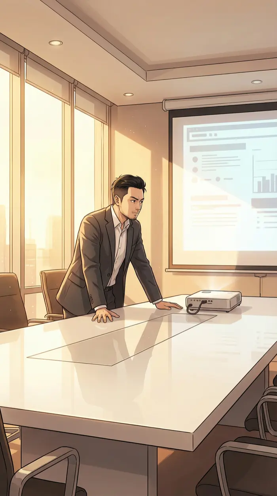
早上八点。我提前一个小时到了公司。大会议室里阳光从落地窗涌进来，把白色会议桌照得发亮。投影仪已经就位，林薇在调试。
赵律师坐在角落翻阅证据文件夹。她是我三天前请的——四十岁，精干马尾，灰色职业套装，一双眼睛像手术刀。这三天她看完了整条证据链，一句废话没说。
投影上第一页PPT——标题是"技术安全审计报告"。下面小字：由朱江及团队准备。
不叫"指控"，叫"审计"。给所有人一个体面的台阶——包括老张。
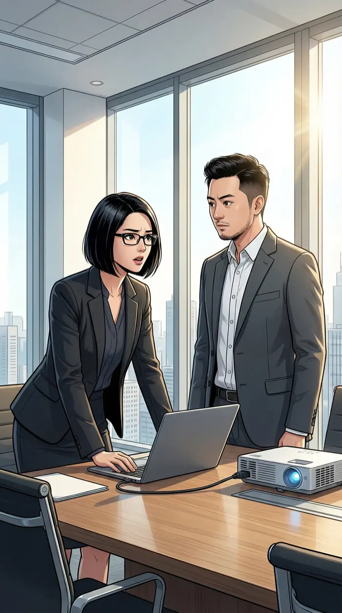
"老张确认来了。陈启明也确认了。还有——"林薇犹豫了一下。"陈启明带了三个人。"
"预料之中。一个律师，一个技术VP，还有一个……"
"周铭。"
我停了一下。然后笑了："他居然把白手套带进审计现场。要么极度自信，要么不知道我查到了周铭。无论哪种——今天更有趣了。"
赵律师头都没抬："朱总，你能不能不笑了。正常人开这种会不会笑的。"
"赵律，如果你看过整条exploit chain，你也会笑的。"
"……我看过了。所以我更不想笑。"
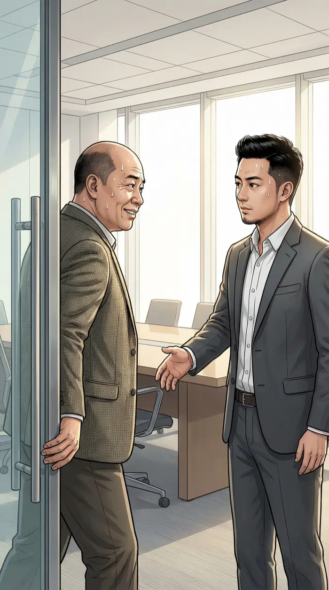
老张第一个到。表情有点僵，但还在装自然。
"小朱啊，今天什么情况？投资人都叫上了？"
我微笑握手："张总辛苦了。今天是个技术安全汇报，正好大家一起听。"
老张的手心有汗。握手的那两秒，我感觉到了——像握着一块正在融化的冰。他心里清楚今天不简单。
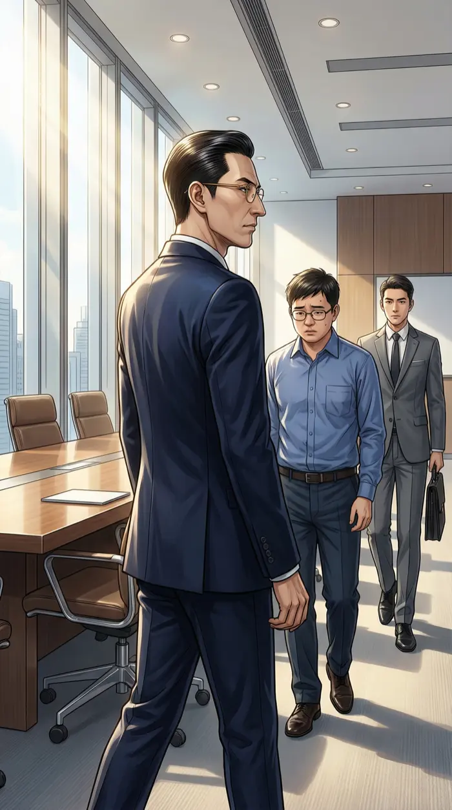
陈启明的团队到了。他走在最前面，西装笔挺，微笑得体——这个人永远像刚从杂志封面上走下来。周铭跟在后面，看到我时微微愣了一下。
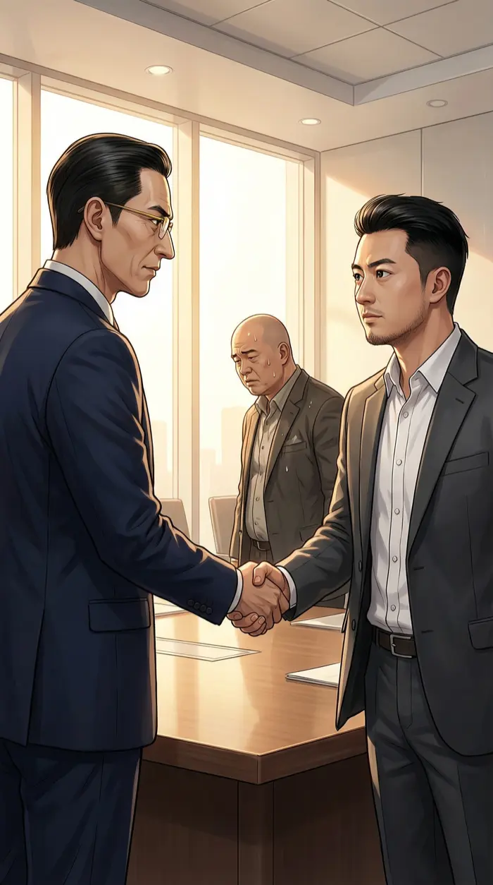
"朱总，又见面了。听说今天有技术报告？正好学习。"
我握手时注意到——陈启明看了一眼老张。老张躲开了他的目光。
他们之间有裂缝了。老张昨晚慌着删文件的事，陈启明可能还不知道。或者他知道但装不知道。无论如何——裂缝就是突破口。
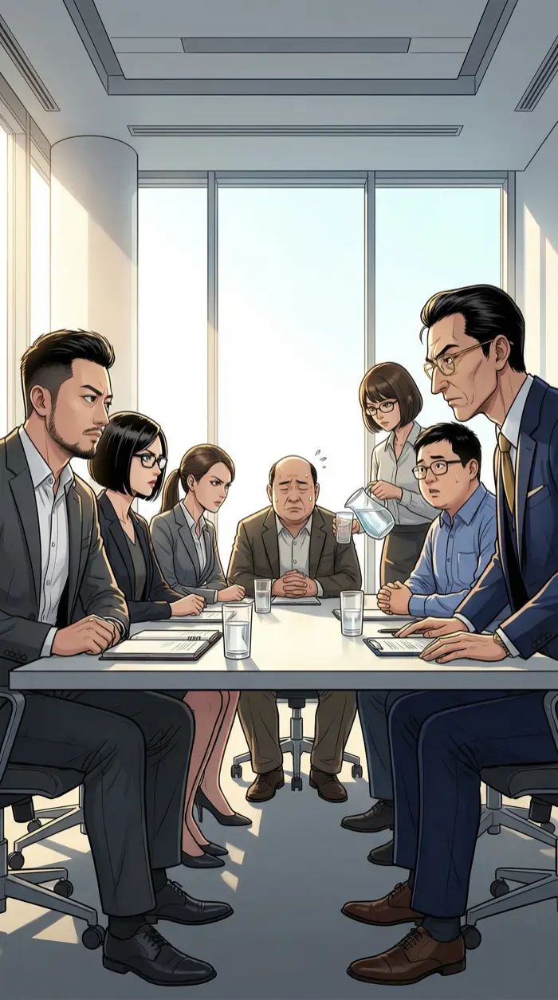
两边落座。空气很紧张。林薇给每个人倒水。走到老张身边时——
"张总喝茶还是水？"
"水。"
林薇笑了笑，没说话。
只有我和林薇知道这个细节：老张上次吃饭时说他只喝茶。水——是我们的微妙信号：我们记得你说的每一句话。
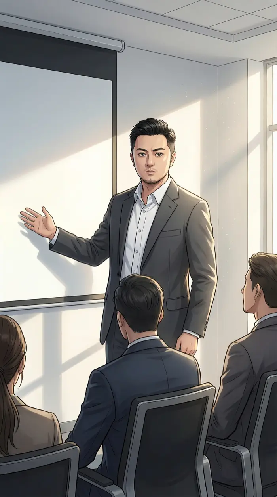
我站起来，走到投影旁边。
"感谢各位。今天这份技术安全审计报告，起因是我们三个月前发现公司代码出现了异常泄露。"
房间里所有人都绷紧了。连空调的嗡嗡声都变得刺耳。
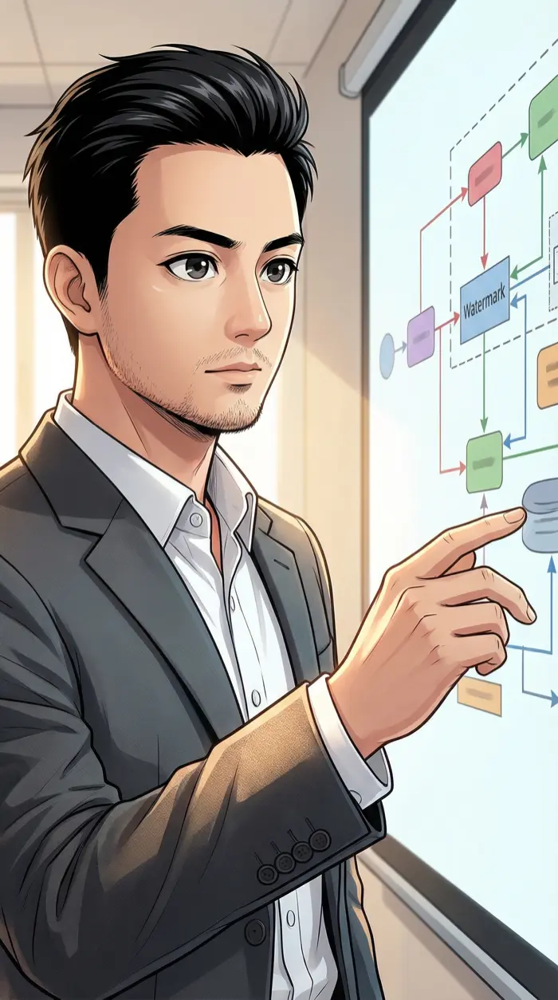
PPT翻到金丝雀水印系统。
"我们在核心模型代码中嵌入了个性化水印。每位有权限访问的人，拿到的代码中嵌有不同的标识。"
我没有看老张。但用余光感觉到他的椅子动了一下。
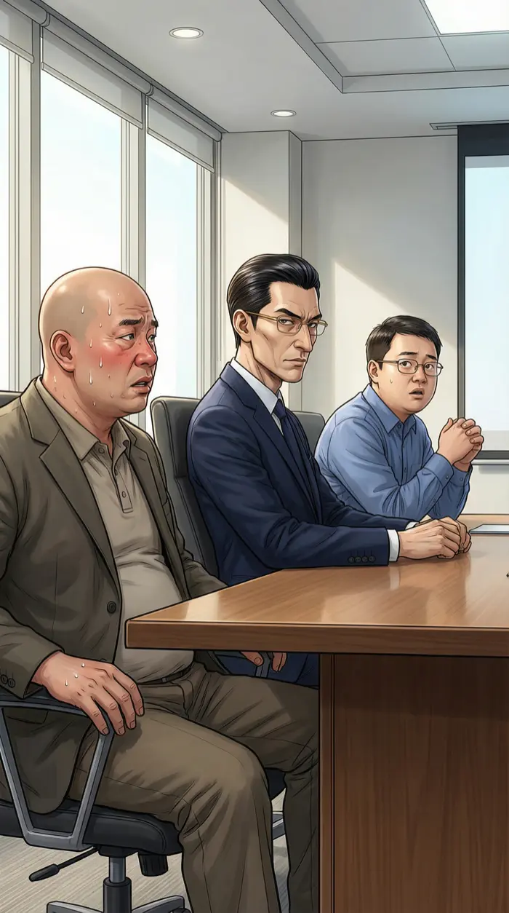
PPT翻到水印触发记录。
"三个月前，编号SG-37的水印在外部环境中被触发。这枚水印对应内部编号为——"
我故意停了两秒。整个房间像真空一样安静。
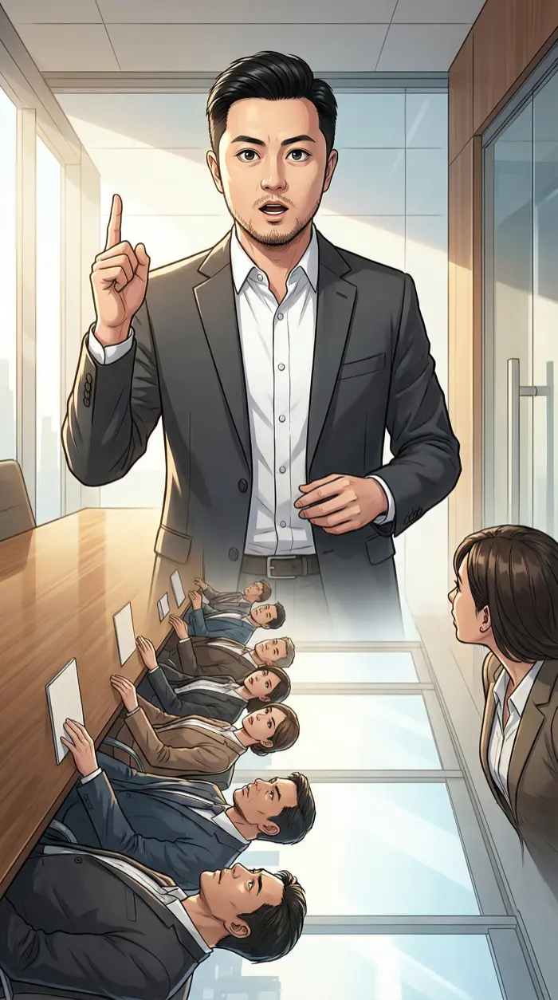
"——对应我们一位投资方的访问权限。"
我依然没有看老张。但全房间的人都看向了他。
当所有人的视线像聚光灯一样打在一个人身上时，那个人不需要承认什么——他的表情会替他说话。
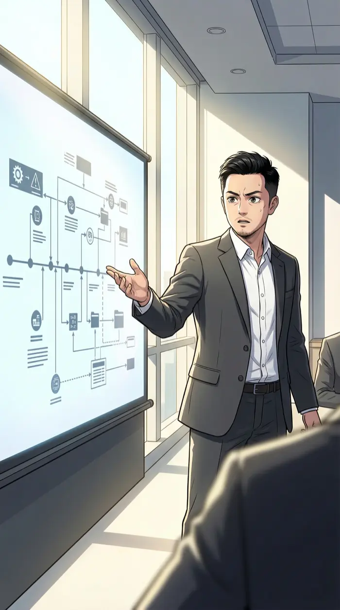
PPT一页页翻——每翻一页，空气就紧一分。
异常IP追踪。指向某私人服务器。
服务器关联实体——"鑫阳科技"壳公司。
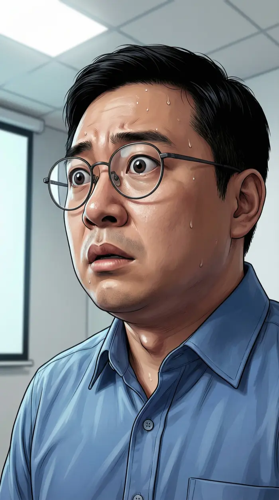
壳公司法人代表——周铭。
我说出这个名字的时候，余光扫到周铭：他的瞳孔放大了，喉结动了一下。微表情不会骗人。
陈启明的表情没变——但他的手指在桌下轻轻敲了两下。
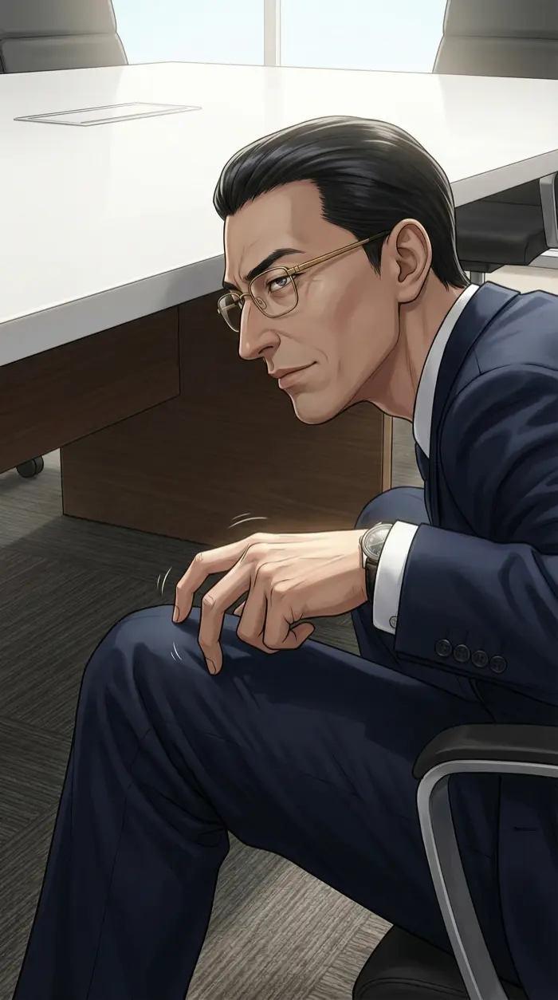
2000万转账记录。备注"一期款"。
完整时间线——老张加入投资人团队→访问代码→水印外泄→壳公司注册→资金流转。
每一页都是一颗钉子。我不需要锤子——证据本身就是锤子。
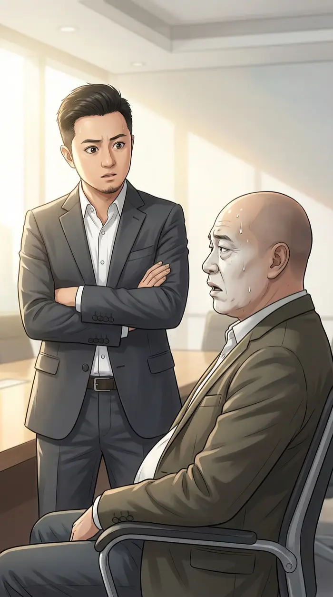
我终于转向老张。
"张总，这份报告中涉及的投资方访问权限，您有什么补充吗？"
老张的脸色已经从红变白。他张了张嘴，没说出话。那一刻他像一台正在蓝屏的电脑——系统还在运行，但屏幕已经死了。
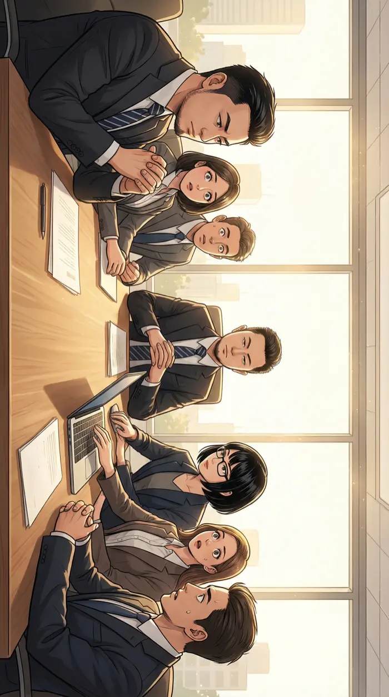
沉默中，林薇的笔记本电脑发出一声微信提示音。所有人都看向她。她面不改色地静音了。
但我知道——那是她设的闹钟：老张的服务器监控显示他刚才又在偷偷用手机远程删文件。林薇看了我一眼。我微微摇头——不急，让他删。删得越多，越心虚。心虚的人更容易犯错。
陈启明开口了。声音平静得不自然——像一把打磨过的刀。
"朱总，这份报告很专业。但我有几个问题。"
"第一，水印触发只能证明代码在外部出现，不能证明是谁传出去的。第二，壳公司和IP关联是间接证据。第三——"他微微一笑——"你把我叫来，是因为周铭曾经在星图AI工作过？前员工的行为不代表公司行为。"
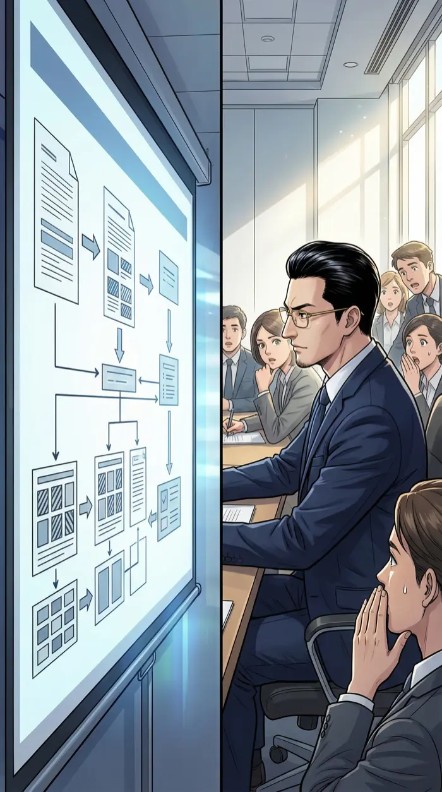
他的律师立刻跟进：
"法律上讲，间接证据链需要排除合理怀疑。目前这些——"
我举手打断。
"陈总说得对。所以我准备了第八页。"
PPT翻到第八页——"多模态推理"信息追踪。
"这个词，是我在一次私人饭局上，只对一个人说过的技术方向。一个我们实际上从未研究过的方向。"
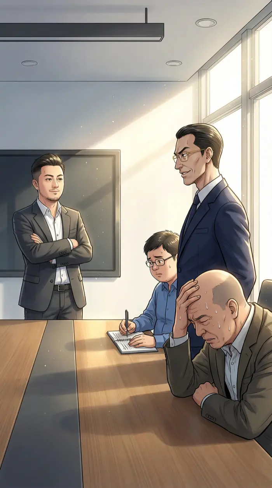
"三天后，星图AI的内部周报中出现了这个词。"
截图清清楚楚地投在屏幕上。
"这叫'蜜罐信息'。安全领域的标准取证手段。独特信息从A流向B，路径只有一条。"
陈启明的微笑凝固了。这是我第一次看到他脸上没有表情管理——就那么一秒。一秒就够了。
蜜罐的杀伤力不在证据本身——在于它证明了一个事实：他的人在我面前毫无防备地暴露了整条信息链。而这意味着，还有更多他不知道我知道的东西。
🎯 决策点八：陈启明被逼到墙角
A. 趁胜追击——继续展示更多证据，彻底钉死，不给回旋余地
B. 适时收手——证据已够，转向"解决方案"，给台阶下
C. 让赵律师接手——法律团队上场，把气氛转为法律程序
▸ 我的选择
选B——菩萨心肠
"菩萨心肠霹雳手段。"霹雳已经打够了，现在是菩萨登场。把对手打到认输后再拉起来——获得的不是敌人，是欠你人情的盟友。
我合上PPT。
"各位。这份审计报告的目的不是追责——是保护。保护我们公司的知识产权，也保护行业的正常竞争秩序。"
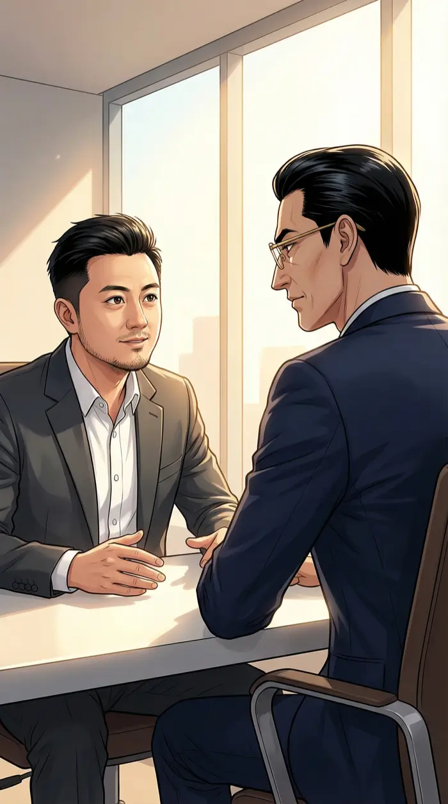
我看向陈启明：
"陈总，我理解商业竞争的压力。我不想把这件事搞成行业丑闻——对你不好，对我也不好。"
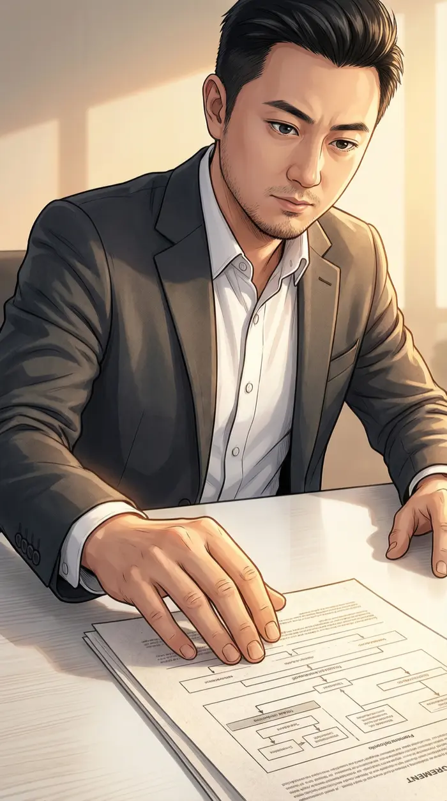
从文件夹里拿出一份新文件——"解决方案框架"。
"第一，撤回收购要约。第二，终止与张某的一切合作。第三，销毁所有通过非正常渠道获取的技术资料。第四——"
我停了一下。
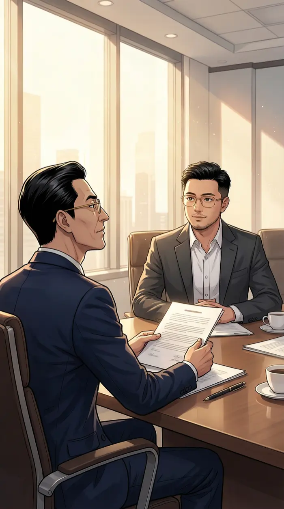
"——星图AI和我们签订技术合作框架协议。在多模态方向上，正式合作，而不是偷。"
陈启明看着这份文件，很久没说话。
然后他抬头看我，眼神变了——从评估变成了某种……尊重。
"朱总……你这个年纪，不多见。"
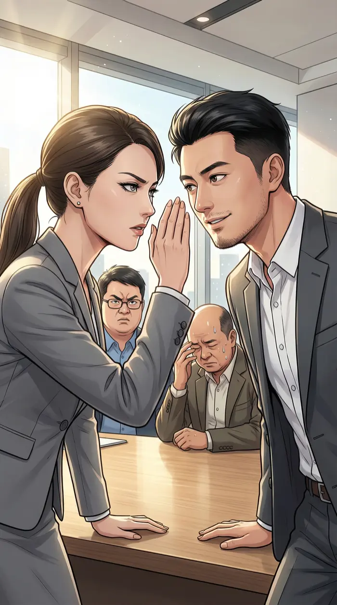
周铭在旁边脸色铁青。老张已经低着头不说话了。
赵律师小声说："朱总，你确定不起诉？"
我小声回："赵律，你的律师费照付。"
"……那还行。"
会后，陈启明团队先离开了。走之前他和我单独说了一句——
"合作的事，我认真考虑。下周我亲自回复。"
握手时他的力度比来时大了一些。这是一种不需要语言的尊重。
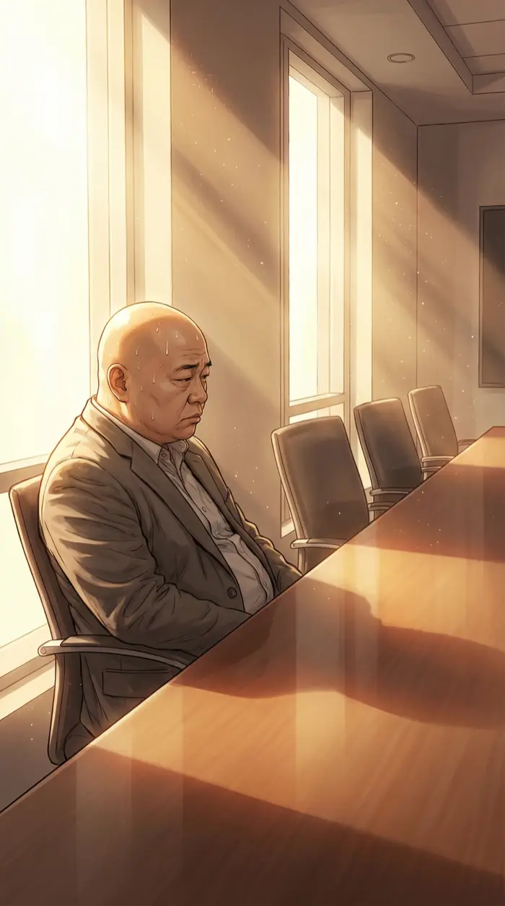
老张被留了下来。
他坐在会议椅上，像是被抽空了力气。阳光从落地窗照进来，打在他的光头上。这个五十多岁的壮汉，此刻看起来像缩小了一号。
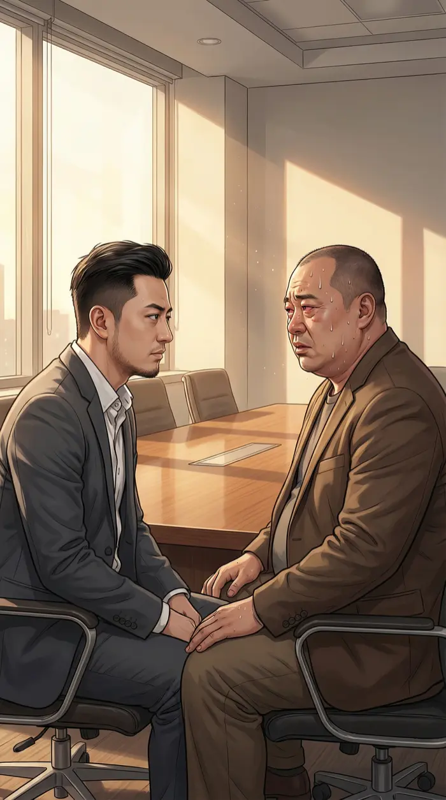
我在他对面坐下。
"张总——不，老张。我不打算报警。但我需要你回答一个问题。"
老张抬头。眼眶有点红。
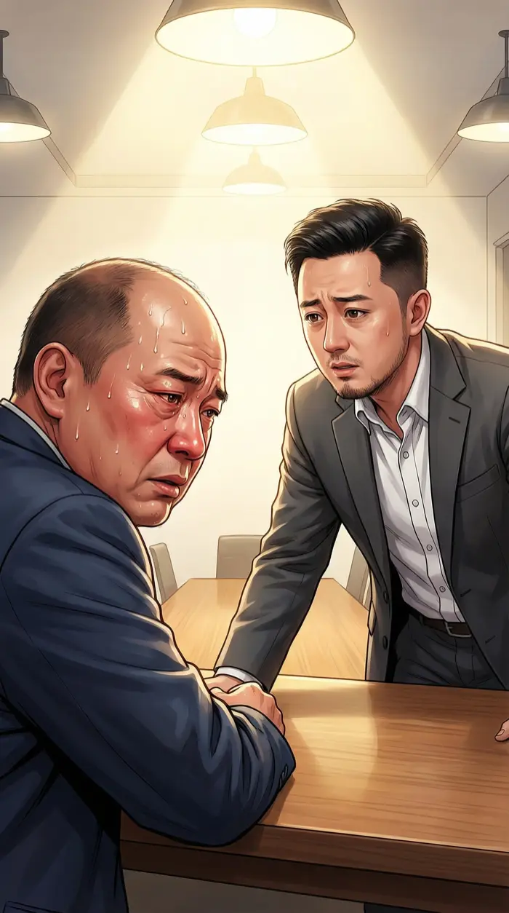
"匿名短信是你发的？"
老张摇头。然后说了一句让我脊背发凉的话——
"不是我。小朱……陈启明不是最上面的。他上面还有人。"
我愣了。
"我当初……不是自愿的。他们找到我的时候，用的是我女儿在美国留学的事。我没有选择。"
这条exploit chain……不是到陈启明就结束了。还有更深的层级。我以为今天是终局——结果只是掀开了地板，下面还有地下室。
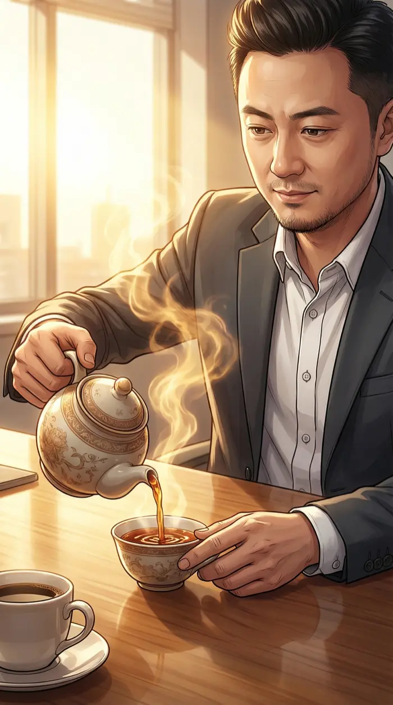
我站起来给老张倒了杯水。想了想——又换成了茶。
老张接过去，愣了一下，然后苦笑：
"你连我喝茶都记得……你小子，真的什么都记得。"
是啊。什么都记得。包括第一次见面时你拍着我肩膀说"年轻人不错"的样子。
会议结束两小时后。午后阳光从大窗户射入办公室，在地板上画出一个个光斑。林薇敲门进来，表情不太对。
"有个事……你要看一下。"
她打开笔记本。
"会议期间，我一直在监控老张的手机流量。他在偷偷删文件，这个你知道。但是——"
她放大一条日志。
"他不只在删自己的。他在给另一个号码发短信。不是陈启明的号。"
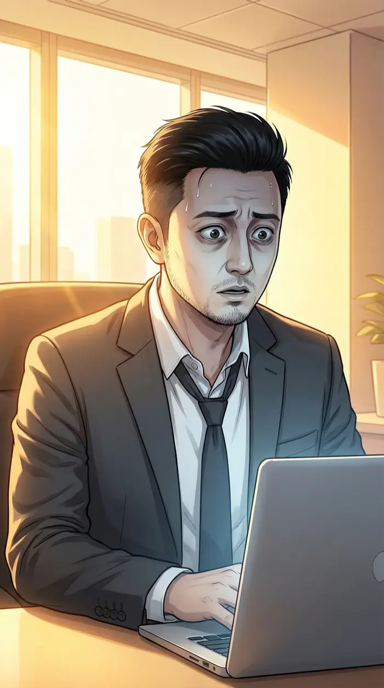
"我追踪了这个号码。归属地是——"她看了我一眼——"硅谷。"
我的心沉了一下。像电梯突然下坠了半层。
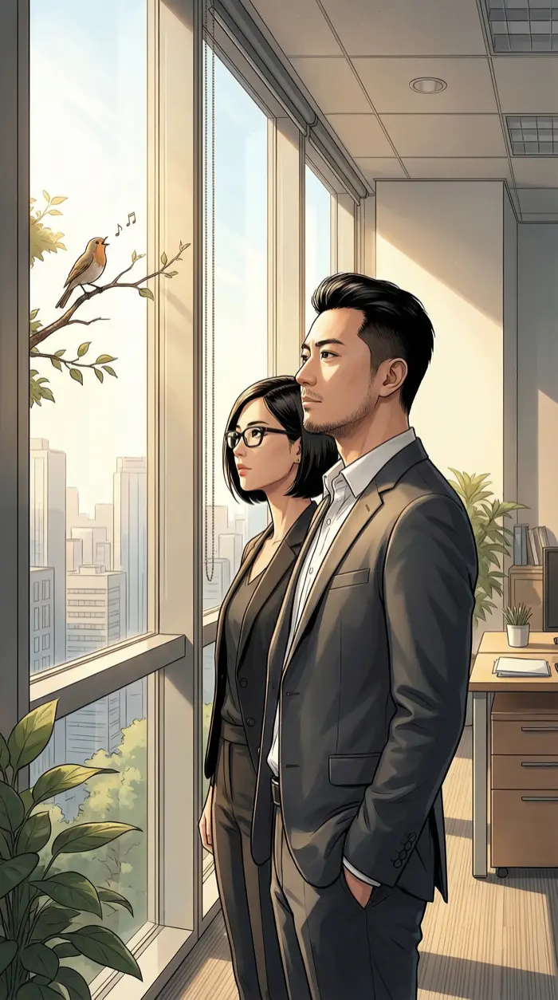
"朱江，如果这个事情不只是国内商业竞争……如果涉及到跨国技术窃取……"
"那就不只是我们公司的事了。"
沉默了很久。窗外有鸟叫声传进来，和这个房间里的凝重感极不协调。
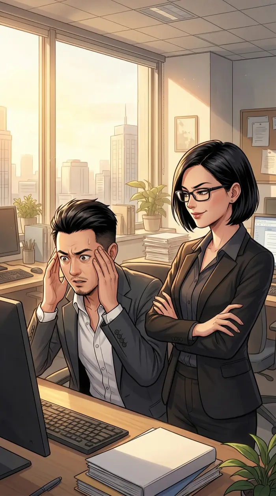
"先不要告诉任何人。包括赵律师。"
林薇点头。
我揉了揉太阳穴。"我以为今天搞完disclosure就能好好吃一顿饭了。结果——"
"恭喜你解锁了：boss战后面还有隐藏boss。"
"……像素RPG都不敢这么写。"
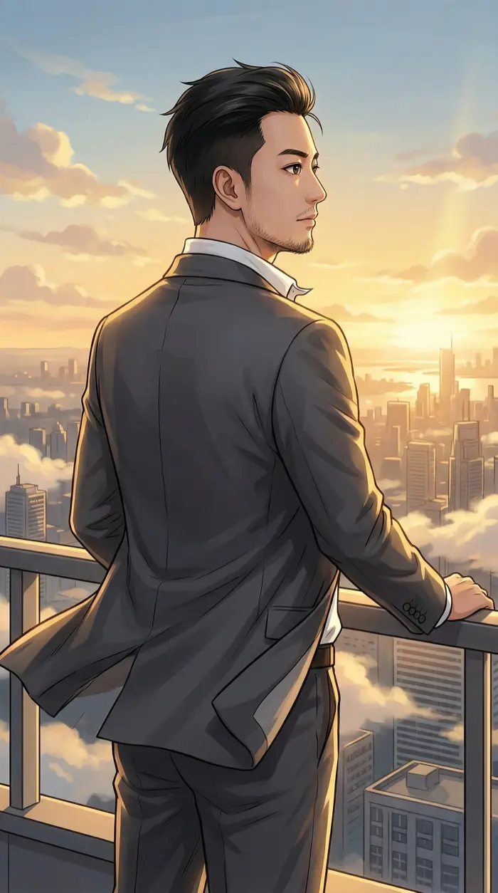
公司楼顶天台。傍晚。
整个城市被夕阳染成金色。风很大，把西装吹得猎猎作响。我一个人站在这里，手里举着已经凉了的咖啡。
今天是过去三个月最漫长的一天。
三个月前，一次普通的代码review。一个不该存在的函数调用。从那个函数调用开始，一路追查到了这里——追到了陈启明，追到了老张的苦衷，追到了硅谷的电话号码。
而这，可能还不是终点。
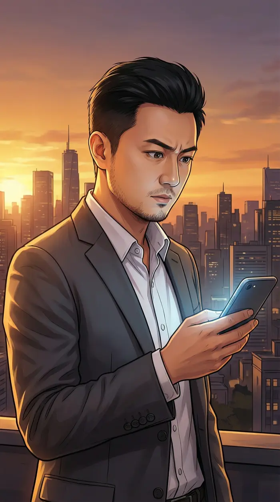
手机响了。陈启明的消息：
"朱总，合作协议我原则上同意。但有些细节需要面谈。另外——注意安全。不是威胁，是忠告。"
"注意安全。"和匿名短信异曲同工。如果连陈启明都在提醒我"注意安全"……那他上面的人，到底是谁？
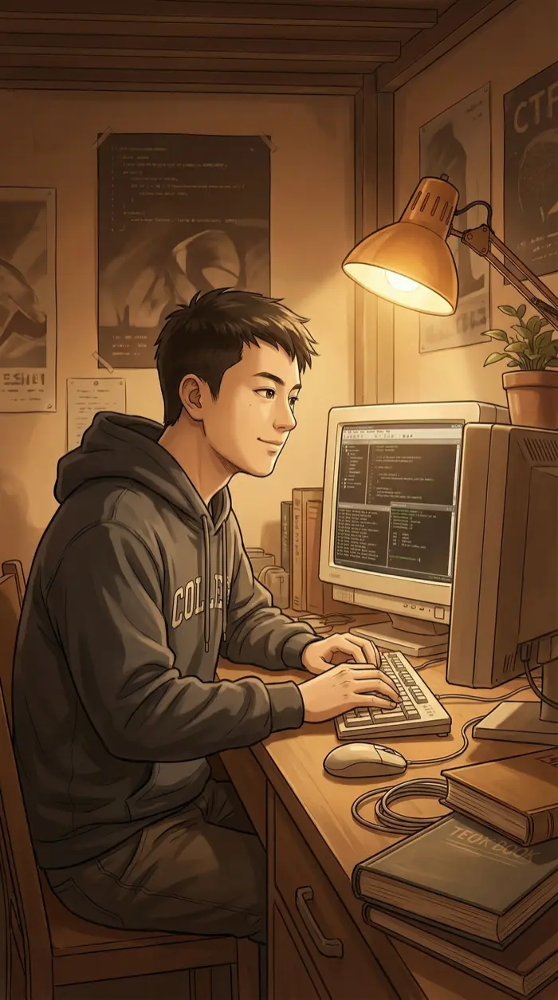
我想起大学时，第一次在CTF比赛中遇到真正的困难——不是技术上的，是心理上的：当你意识到对手比你强的时候。室友问我："你不怕吗？"我说："怕。但怕的时候才是学到最多的时候。"
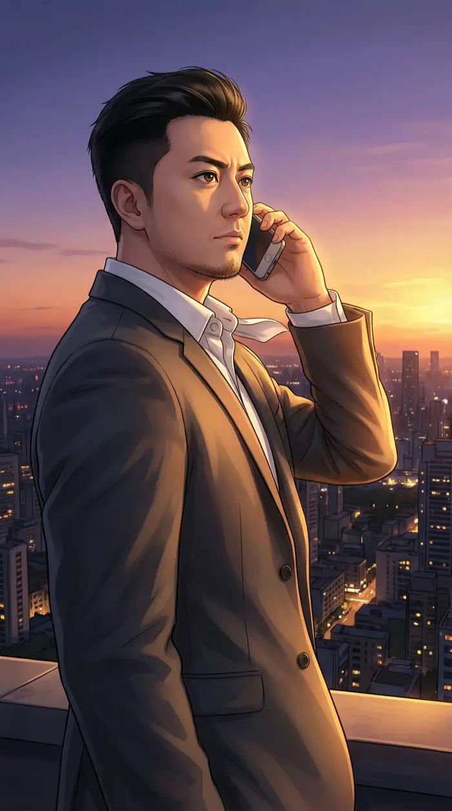
掏出手机，打给林薇。
"查那个硅谷号码。用所有能用的方法。"
"这可能需要一些……不太常规的手段。"
"我们本来就不是常规的公司。"
出租车后座。窗外是流动的万家灯火。暖黄色路灯一盏接一盏地从脸上扫过，像时间在倒计时。
手机上三条未读消息排列在一起——
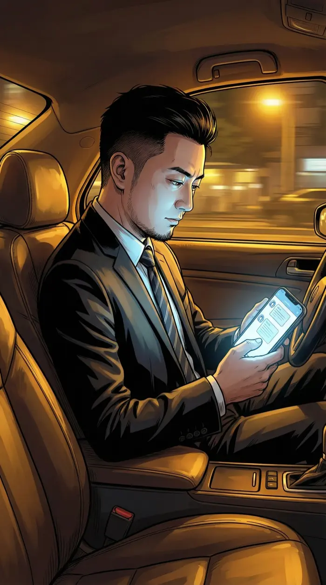
第一条，陈启明："注意安全。"
第二条，林薇："硅谷那边……查到了一些东西。明天当面说。"
第三条，未知号码：
"朱先生，我代表一个对您技术很感兴趣的机构。我们可以提供陈启明给不了的东西——保护。有兴趣的话，明天上午十点，国金中心38楼。不需要回复，来或不来。"
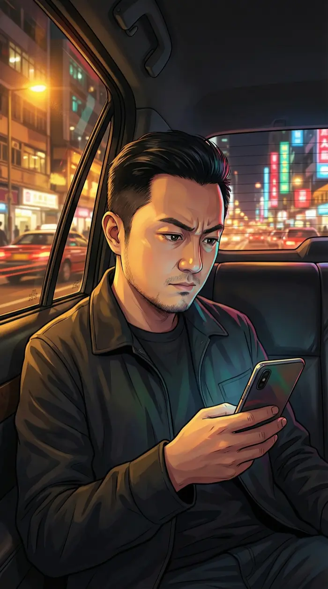
"保护"——既是诱惑，又是威胁。一个需要提供"保护"的世界，意味着存在需要被保护的东西。
三条消息，三个方向：合作、追查、未知。而我，得在明天上午之前做出选择。
出租车在红灯前停下。
司机从后视镜看了我一眼：
"哥们，你是不是搞IT的？"
"啊？怎么看出来的？"
"盯手机半天不动，眉头越皱越紧，肯定是在看bug。"
我笑了："差不多。一个很大的bug。"
第四章 · 完
🔥 硅谷号码背后是谁？跨国技术窃取？
🔍 林薇查到了什么"明天当面说"？
🏢 国金中心38楼——陷阱还是机会？"保护"意味着什么？
⚠️ 陈启明的"注意安全"——真心警告还是试探？
第五章：深水区 · 即将揭晓